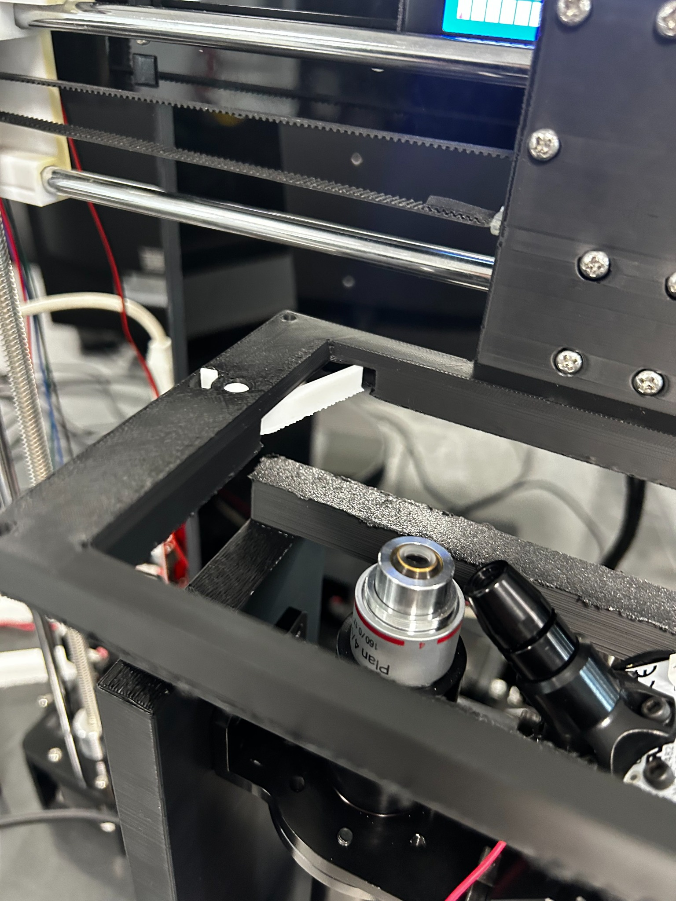
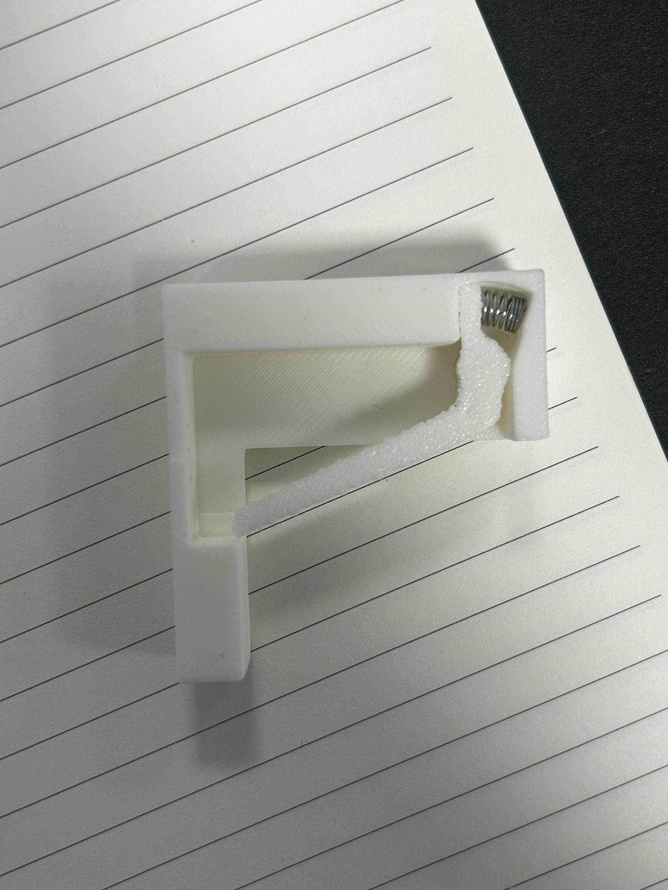
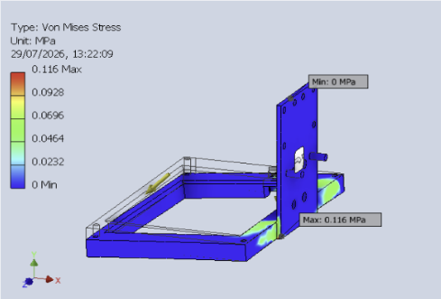
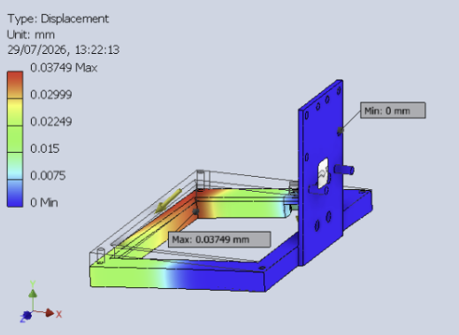
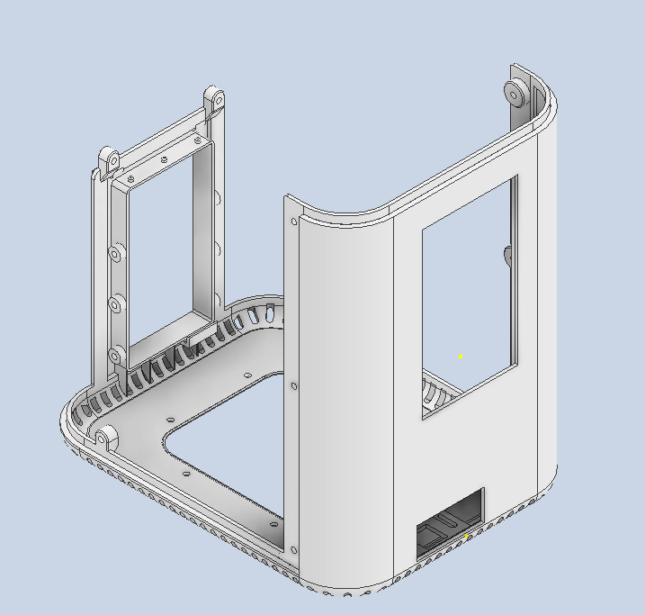
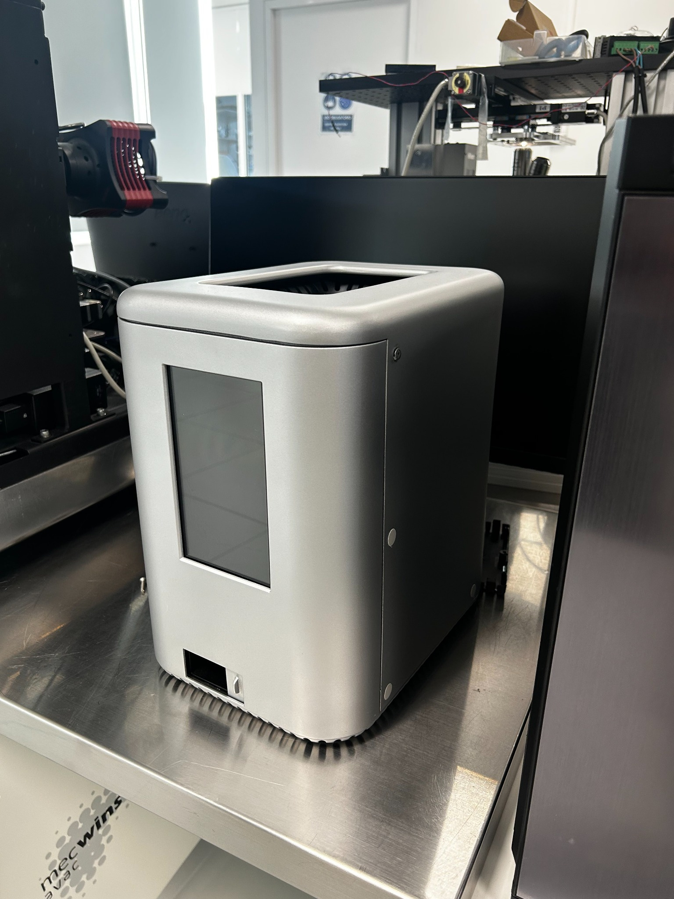
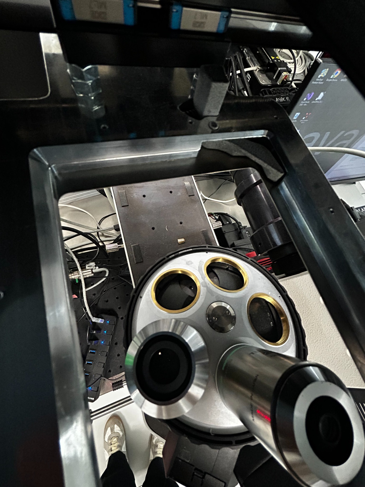

01 / Medtech · R&D
Mecwins: R&D Intern
Repurposed a 3D printer into a motorized microscopy platform. Designed the optical frame and sample holder, and developed Python software for motion control, camera imaging, calibration, and autofocus.

The challenge
Build a low-cost motorized microscopy stage using an existing Anet A8 printer chassis. The platform needed to position samples, support the optical assembly, and bring imaging and motion controls into one interface.
What I designed
I led mechanical design, CAD, and hands-on prototyping of the optical frame and sample holder. I iterated through 3D-printed prototypes and design reviews with my supervisor, and independently developed the control software.
- Optical frame: added a second support after PLA prototypes cracked under cantilever loading. Revised the mounting geometry for easier assembly and replaced a loose press-fit joint with a dovetail, splitting the frame to fit the printer’s build volume.
- Mounting plate: cut and drilled an aluminum plate with threaded mounting holes to secure the optical frame to the printer base.
- Sample holder: measured the in-house sample range and used trigonometric calculations to size a spring-loaded trigger. Refined the geometry through prototyping and testing, then used static FEA to assess stress and deflection.
- Control interface: built a Python GUI combining live imaging, G-code motion control, pixel-to-micron calibration, illumination control, and coarse-to-fine autofocus.
Design in practice


Analysis & outcome
The sample-holder static FEA predicted 0.0375 mm maximum displacement and 0.116 MPa peak stress under the selected worst-case sample load. These are simulation results, rather than measured positioning accuracy.
The project produced a functional microscopy platform integrating custom mechanical components with imaging and motion-control software.


Extra work
Collaborated with other engineers to take a protective casing from CAD to a finished enclosure and adapt my sample-clamping concept for a larger instrument.



Code
Python control software connects the microscopy platform’s motion and imaging systems in one interface.
- Motion control: serial G-code commands for X/Y/Z positioning and keyboard jogging.
- Imaging: live camera feed, pixel-to-micron calibration, and illumination control.
- Autofocus: a coarse-to-fine Z sweep using image sharpness to select focus.
Control system demonstration
Primary testing of the Python control interface, showing camera imaging alongside motion and illumination controls.
Recorded during primary testing. The interface brings imaging and hardware controls into one workspace.